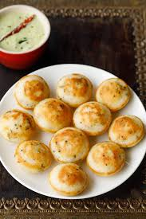

Appe

Appe, also known as Paniyaram, is a soft and spongy South Indian snack made using fermented rice and lentil batter. It is light, healthy, and quick to make with minimal ingredients 😊.
Ingredients:
- 1 cup rice
- 1/4 cup urad dal (split black gram)
- 1 tablespoon chana dal (Bengal gram)
- 1 tablespoon fenugreek seeds
- 1/4 cup grated coconut (optional)
- Salt to taste
- Oil for greasing
Instructions:
-
Prepare the batter:
- Rinse rice, urad dal, chana dal, and fenugreek seeds thoroughly.
- Soak them together for 4-5 hours.
- Grind into a smooth batter with water and set aside to ferment overnight.
-
Cook the Appe:
- Grease an appe pan with a small amount of oil.
- Pour the batter into each cavity of the pan.
- Cover and cook on medium heat until the bottom is golden brown.
- Flip the appe and cook the other side until crisp.
Serving:
Serve hot with coconut chutney, sambar, or tomato chutney. These bite-sized delights are perfect for breakfast, evening snacks, or even as appetizers 😊.